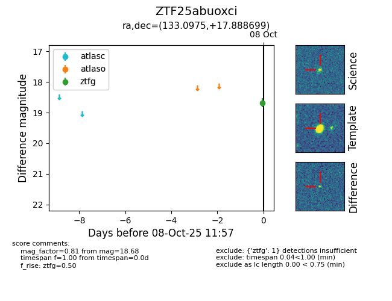

FINK: ZTF25abuoxci
Lasair: ZTF25abuoxci
ALeRCE: ZTF25abuoxci
ZTF25abuoxci (ztf,fink)
equatorial (ra, dec) = (133.0975,+17.88870)
galactic (l, b) = (209.1153,+34.51266)

last ztfg=18.68
1 ztfg detections